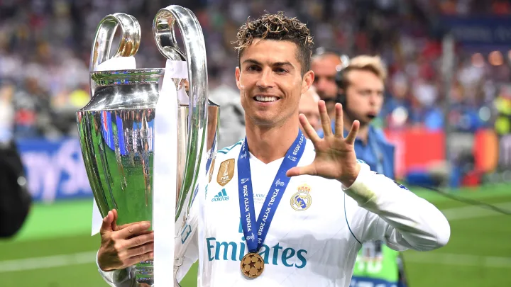
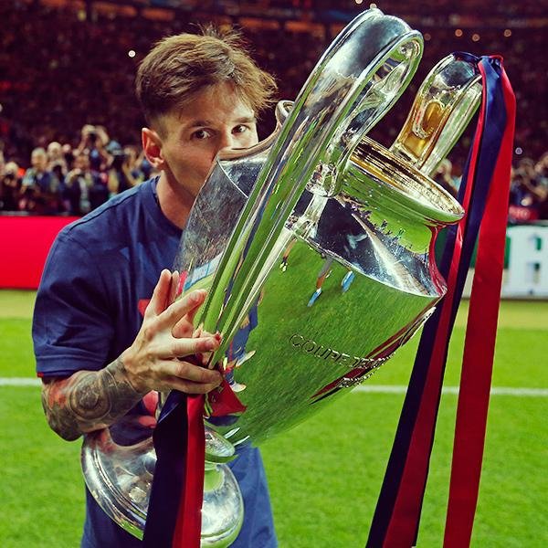
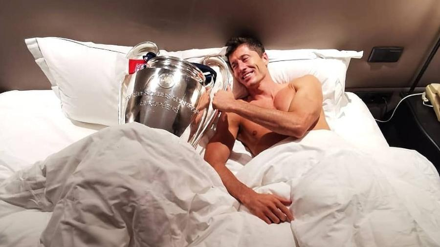
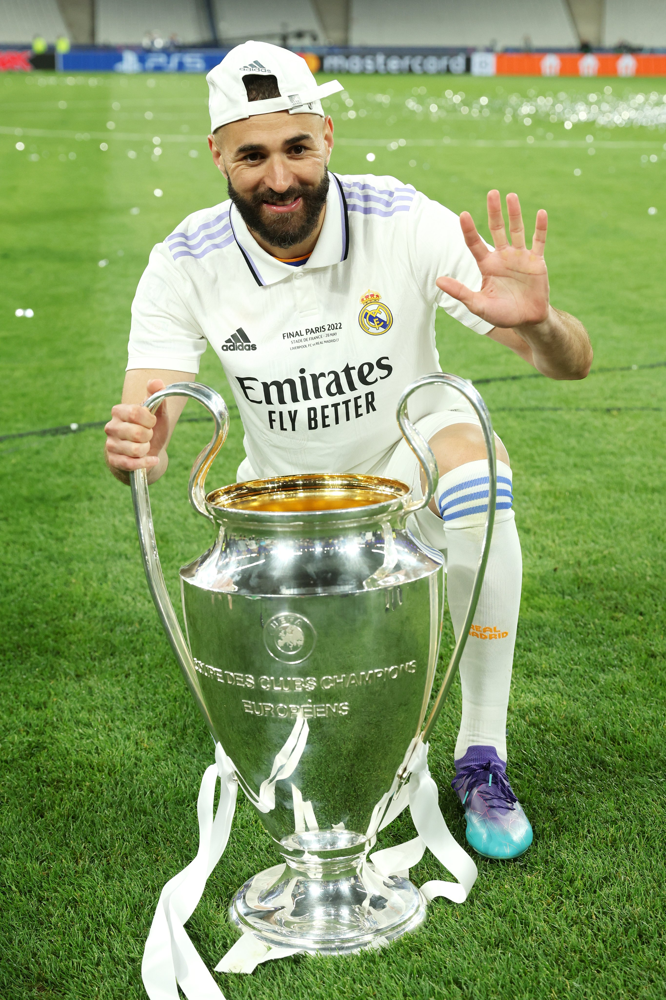
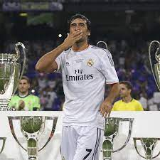
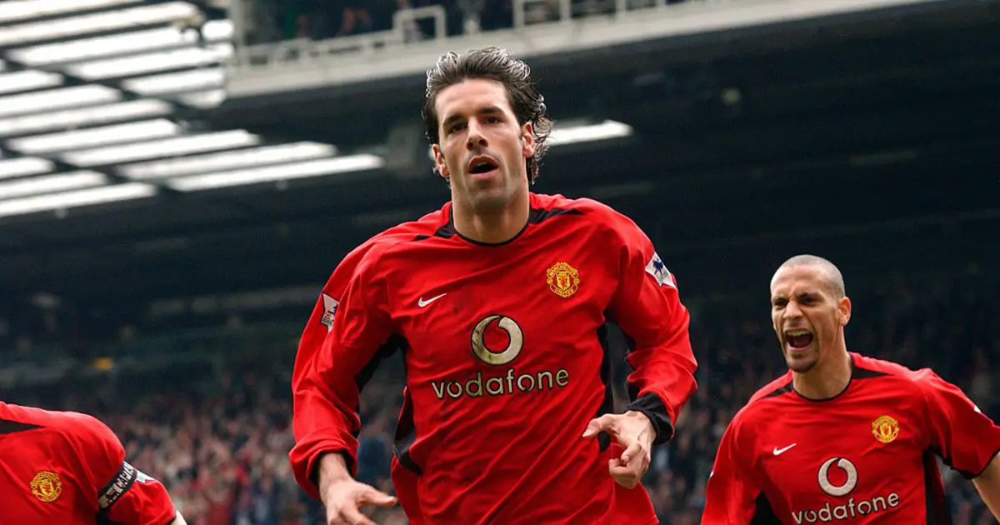
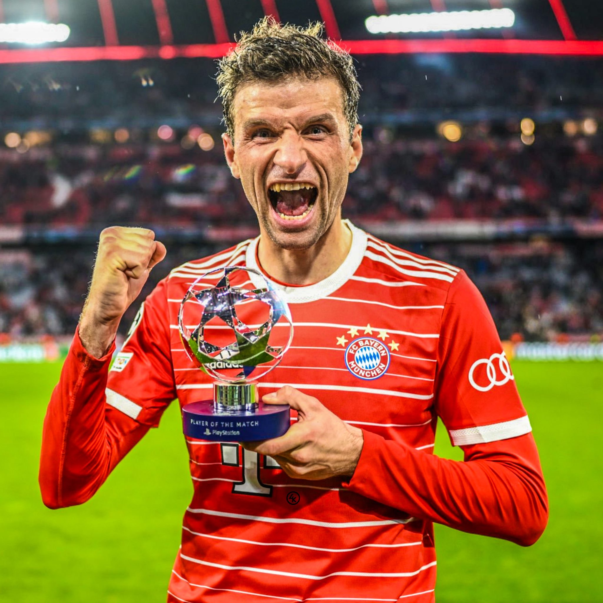
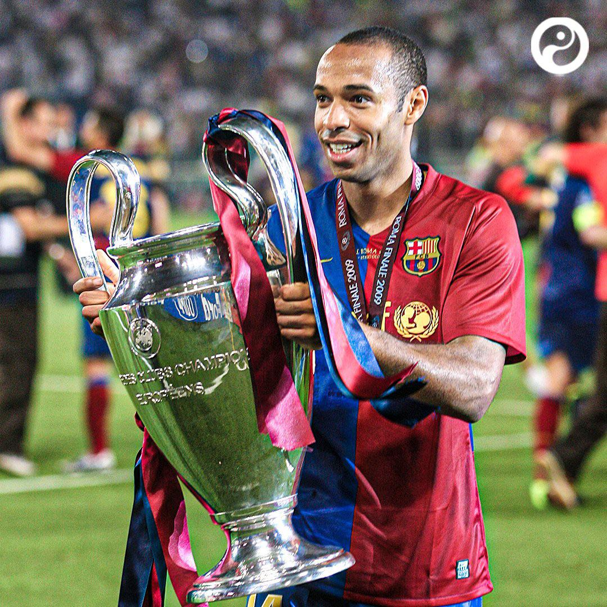
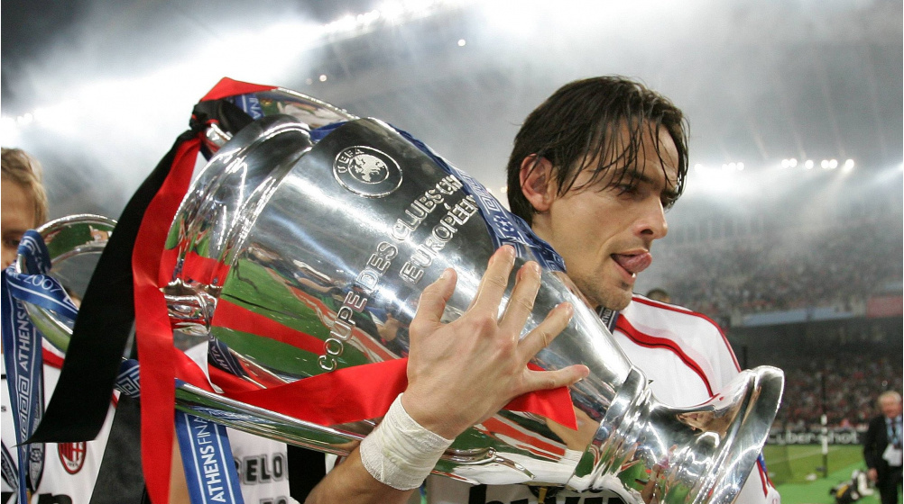
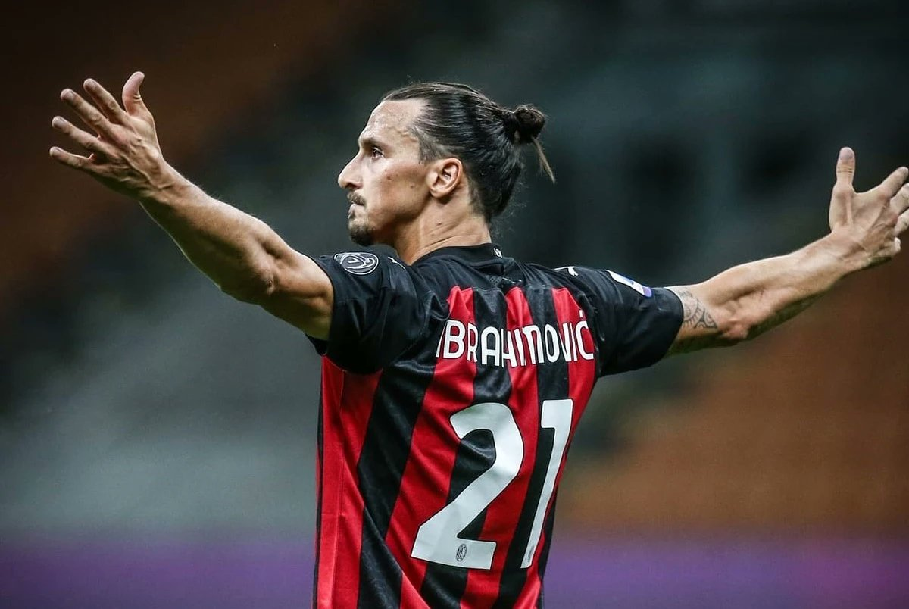

Maiores Artilheiros da História da Champions
1- Crisitano Ronaldo (140 Gols)
Cristiano Ronaldo é o maior artilheiro da história da UEFA Champions League. Ronaldo é conhecido por alguns como 'Mr Champions League' devido ao seu sucesso incomparável na competição, Ele ganhou cinco troféus da Liga dos Campeões, erguendo o primeiro com o Manchester United em 2007-08 e os outros 4 pelo Real Madrid. Os 17 gols que Cristiano marcou na edição 2013-14 da competição é o recorde de gols da Liga dos Campeões em uma única temporada.
Nas últimas duas décadas, CR7 dominou o cenário do futebol europeu. Além de múltiplos títulos nacionais e continentais, seu desempenho em campo o credenciou a conquistar cinco Bolas de Ouro. Isso se reflete em seus números e estatísticas. Somente na Champions League, Cristiano é o maior artilheiro da história, com 140 gols.
2- Lionel Messi (129 gols)
Lionel Messi é um futebolista argentino que atua como atacante.Ele possui um recorde de sete premiações da Bolas de Ouro pela France Football e sete pela FIFA, um recorde de seis Chuteiras de Ouro e, em 2020, foi escalado no Dream Team da Bola de Ouro.
Messi conquistou a Champions League com o Barcelona em quatro ocasiões: nas temporadas 2005-2006, 2008-2009, 2010-2011 e 2014-2015. Nessas campanhas, Messi desempenhou um papel fundamental na conquista do título, sendo um dos jogadores mais influentes do Barcelona nessas temporadas.
3- Robert Lewandowski (91 gols)
Robert Lewandowski, o renomado jogador de futebol do Bayern de Munique, conquistou a Liga dos Campeões da UEFA (Champions League) em uma ocasião. Lewandowski venceu a Champions League na temporada 2019-2020, quando o Bayern de Munique foi coroado campeão após vencer o Paris Saint-Germain por 1x0 na final. O polonês tem 228 gols na Bundesliga, sendo o terceiro maior artilheiro da história da competição
4- Karim Benzema (90 gols)
Benzema é considerado um dos maiores atacantes de sua geração. É o segundo maior artilheiro da história do Real Madrid e o jogador com mais assistências na história do clube. Conquistou 23 títulos pela equipe merengue, incluindo cinco títulos da Liga dos Campeões da UEFA. Em 2022, Benzema foi artilheiro e sagrou-se campeão da Liga dos Campeões da UEFA, o seu quinto título europeu pelo Real Madrid.
5- Raúl González (71 gols)
 >Raúl González Blanco é um treinador e ex-futebolista espanhol que atuava como atacante. Atualmente comanda o Real Madrid Castilla. Passou 15 anos de sua carreira jogando no Real Madrid, onde é o jogador que mais atuou com a camisa do clube merengue, com 741 aparições.
6- Ruud van Nistelrooy (56 gols)
"Ruud" Van Nistelrooy é um treinador e ex-futebolista neerlandês que atuava como centroavante. Era um ótimo finalizador, exímio cobrador de pênaltis, possuía uma boa visão de jogo e marcou cerca de 400 gols em toda sua carreira.
O ex-jogador de futebol holandês, não conquistou a Champions League durante sua carreira como jogador. Van Nistelrooy teve uma carreira brilhante, sendo conhecido por sua habilidade como artilheiro e suas contribuições para vários clubes, como o Manchester United e o Real Madrid. No entanto, ele não teve a oportunidade de erguer o troféu da Champions League ao longo de sua carreira.
7- Thomas Müller (53 gols)
Cria do Bayern de Munique, o alemão de 30 anos começou sua carreira profissional em 2008. Desde então, enfileirou títulos: são nove Bundesligas, seis títulos da Copa da Alemanha, duas Champions League e a Copa do Mundo de 2014, com a seleção da Alemanha, vencido no Brasil.
8- Thierry Henry (51 Gols)
Thierry Henry, o ex-jogador francês de futebol, conquistou a Liga dos Campeões da UEFA (Champions League) em uma ocasião durante sua carreira. Henry foi membro do time do Barcelona que venceu a Liga dos Campeões na temporada 2008-2009.
Thierry Henry teve uma carreira de sucesso e é considerado um dos melhores atacantes da história do futebol. Além da conquista da Liga dos Campeões, ele também conquistou vários outros títulos e prêmios individuais ao longo de sua carreira.
9- Filippo Inzaghi (50 Gols)
Filippo Inzaghi é um treinador e ex-futebolista italiano que atuava como centroavante. Atualmente comanda a Reggina. Atuou em vários clubes italianos e viveu sua melhor fase na Juventus e no Milan, conquistando dois títulos da Liga dos Campeões da UEFA e três títulos da Serie.
Inzaghi é amplamente respeitado por sua habilidade como finalizador e por seu instinto dentro da área. Suas conquistas na Champions League com o AC Milan fazem parte do legado de um jogador talentoso e eficaz ao longo de sua carreira.
10- Zlatan Ibrahimović (48 Gols)
Zlatan Ibrahimović é um ex-jogador profissional de futebol sueco conhecido por suas habilidades excepcionais, força e capacidade de marcar gols. Ibrahimović teve uma carreira ilustre, jogando em vários clubes importantes da Europa e representando a seleção sueca. Alguns dos notáveis clubes pelos quais ele jogou incluem Malmö FF, Ajax, Juventus, Inter de Milão, Barcelona, AC Milan, Paris Saint-Germain (PSG), Manchester United e LA Galaxy.
Fora do campo, Ibrahimović é conhecido por sua personalidade carismática e natureza franca, que muitas vezes atraiu a atenção da mídia. Apesar de nunca ter vencido uma Uefa Champions League, o sueco levantou diversas taças de peso, incluindo o Mundial de Clubes e Uefa Europa League.